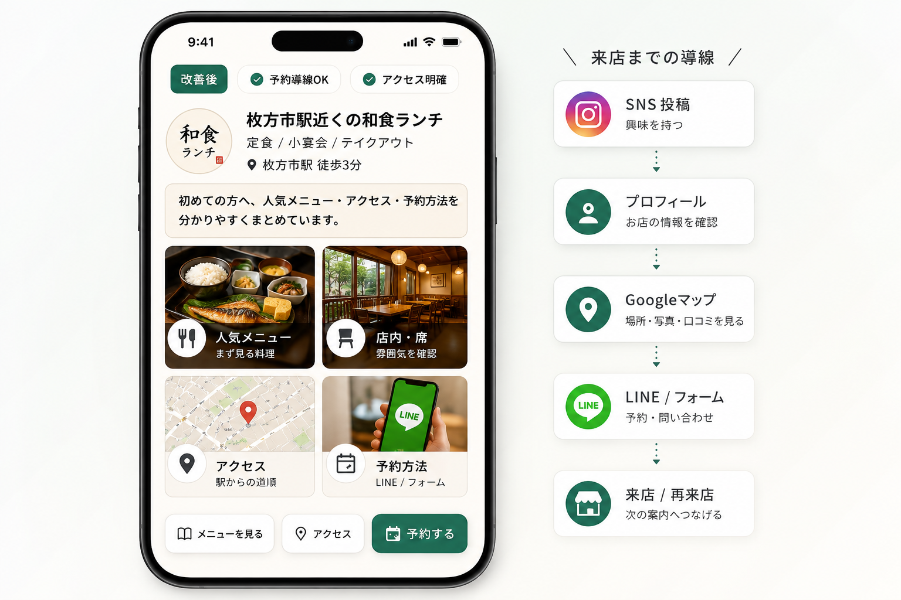
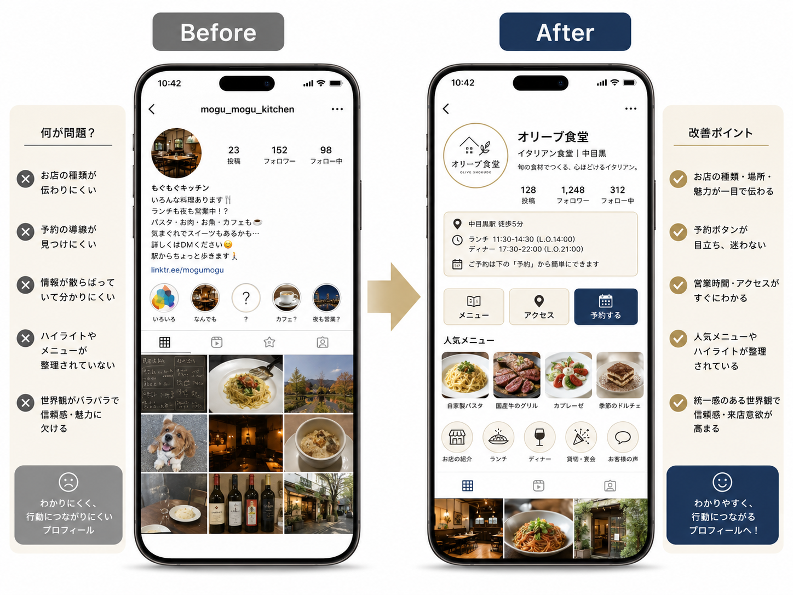
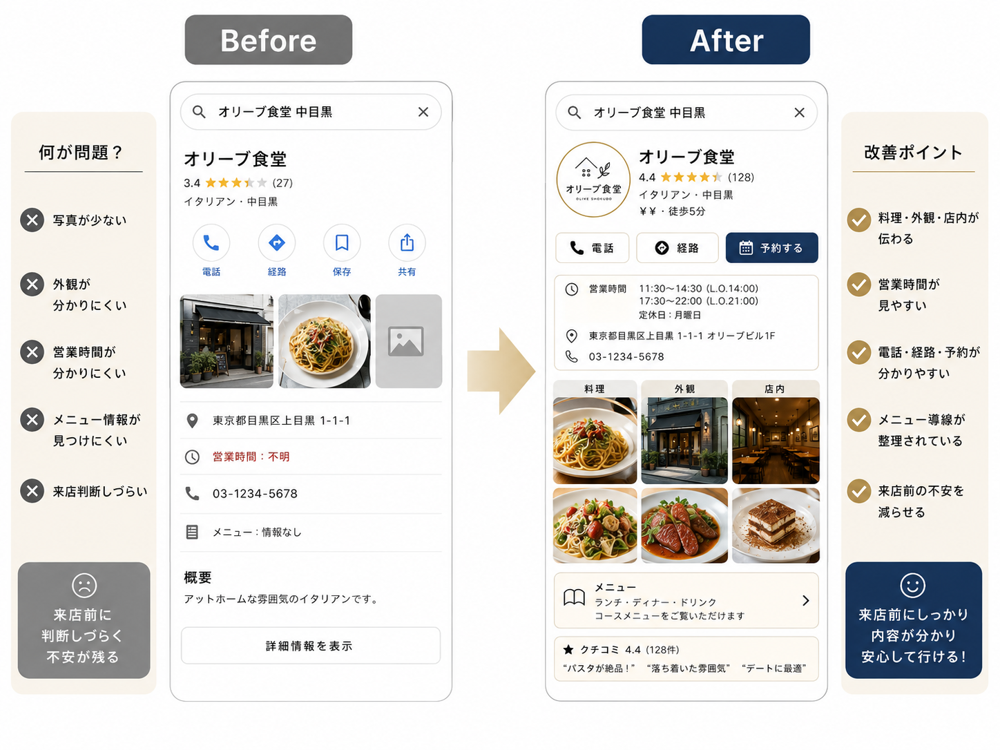
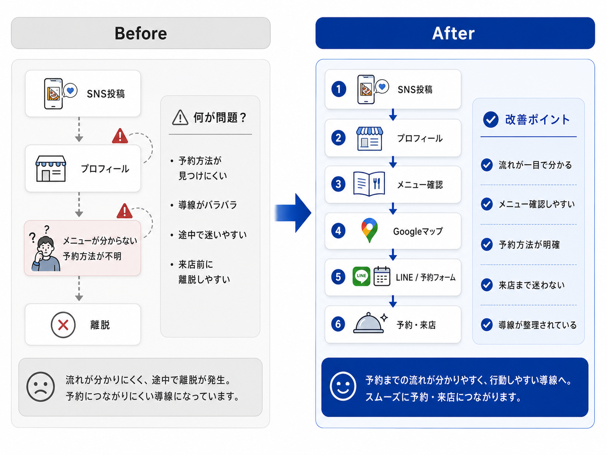

01
SNS設計・発信整理
初めて見る人に、店の魅力と次の行動が伝わる状態へ
- Instagram / TikTokのプロフィール確認
- 投稿テーマの整理
- 固定投稿・ハイライトの見直し
- メニュー、アクセス、予約導線の整理
- 初めて見る人に伝わるアカウント設計
枚方市・北河内・京阪沿線エリアの飲食店向け
Instagram・Googleマップ・LINE・予約フォームを見直し、見た人が迷わず来店・予約できる導線を整えます。
枚方市・寝屋川市・交野市・八幡市・高槻市など、北河内・京阪沿線エリアの飲食店向け集客支援。

課題提示
毎日の営業で忙しい飲食店にとって、SNSやGoogleマップ、LINE、予約導線まで整えるのは簡単ではありません。投稿を続けていても、来店までの流れが弱いと、お客様は途中で離れてしまいます。
なぜ投稿だけでは弱いのか
SNS投稿は入口にすぎません。見た人がプロフィールを確認し、Googleマップやメニューを見て、予約や問い合わせに進むまでの流れが整っていないと、せっかく興味を持ったお客様も途中で離れてしまいます。
サービス内容
投稿を増やすだけではなく、見つけてもらい、調べてもらい、予約・来店につなげる流れを整えます。
SNS設計・発信整理
Googleマップ・来店前情報の改善
予約・再来店導線の改善
Instagram、Googleマップ、LINE、予約方法のどこで迷われているかを一緒に見ます。
改善イメージ
文章だけで説明するのではなく、SNSプロフィール、来店前情報、予約導線のどこを整えるのかをサンプルUIで見える化しています。
※以下は実在店舗の成果ではなく、改善内容を分かりやすく伝えるためのサンプルです。実際の改善内容は店舗ごとの状況に合わせてご提案します。

Before
After
プロフィールを“自己紹介”ではなく、初回来店客を予約・来店に進める入口として整えます。

Before
After
Googleマップは、検索された後に「行くかどうか」を判断される場所です。SNSだけでなく、来店直前の情報も整えます。

Before
After
投稿の反応だけでなく、見た人が実際に予約・来店するまでの道筋を整えます。
得られる状態
初めて見る人が、お店の魅力を理解しやすくなる
メニュー・アクセス・予約方法が分かりやすくなる
SNSからGoogleマップや予約へ進みやすくなる
LINEやフォームを活用し、再来店につなげやすくなる
店主が現場に集中しながら、改善を進めやすくなる
比較
投稿の見た目だけでなく、来店・予約までの流れを確認する点が大きな違いです。
| 比較項目 | 一般的なSNS投稿代行 | グルメサイト・広告依存 | 枚方飲食集客LAB |
|---|---|---|---|
| 目的 | 投稿作成や更新代行が中心 | 広告や掲載による露出を増やす | 来店・予約につながる導線を整える |
| 見る範囲 | SNSアカウント内が中心 | 掲載ページや広告枠が中心 | SNS、Googleマップ、LINE、LP、予約導線まで確認 |
| 改善対象 | 投稿内容、画像、文章 | 広告文、掲載情報、キャンペーン | プロフィール、来店前情報、予約方法、再来店導線 |
| 地域理解 | 支援会社により差がある | 媒体や広告枠に左右されやすい | 枚方周辺の生活圏を意識して提案 |
| 小規模店との相性 | 投稿量が負担になる場合がある | 費用対効果が読みづらい場合がある | 今あるものを活かし、優先順位をつけて始めやすい |
| 伴走内容 | 投稿納品で終わりやすい | 掲載や広告運用が中心 | 次にやることを整理し、反応を見ながら改善 |
対応エリア
料金
まずは無料相談から。月額運用の前に、単発の初回集客導線診断から始めることもできます。
0円
30,000円〜
月額50,000円〜
まずはSNSと基本導線を整えたい店舗向け。
月額100,000円〜
SNS発信とGoogleマップ、予約導線を継続的に整えたい店舗向け。
月額150,000円〜
LPやキャンペーン導線まで含めて改善したい店舗向け。
正式な内容は、お店の状況や必要な支援範囲に合わせて無料相談でご提案します。
導入の流れ
まずは現状を伺い、優先順位を決めてから必要な改善に進みます。
お店の状況や今のお悩みを伺います。
Instagram、Googleマップ、LINE、予約導線を確認します。
優先順位をつけて、まず直すべきポイントをご提案します。
必要な改善から順番に進めます。
反応を見ながら、次の改善点を整理します。
FAQ
はじめての方にも安心してご相談いただけるよう、よくある質問をまとめました。
A. 大丈夫です。専門用語をできるだけ使わず、今のお店に合う形でご説明します。
A. 可能です。Googleマップは来店前の判断に関わるため、単体での確認もおすすめです。
A. 相談できます。まずは今ある写真を確認し、追加で必要な写真も整理します。
A. 大丈夫です。必要な場合は導入から一緒に考えます。
A. 大丈夫です。まずは今の状態を確認し、必要な改善点を整理します。
A. もちろん可能です。むしろ、これから集客の土台を整えたい店舗に向いています。
A. 内容によって可能です。ただし、投稿だけでなく来店・予約までの導線も合わせて確認することをおすすめします。
無料相談
Instagram、Googleマップ、LINE、予約フォームのどこでお客様が迷っているかを確認し、まず直すべきポイントを整理します。
現状がまとまっていなくても大丈夫です。お店のSNSや予約方法を見ながら、分かる範囲で確認します。